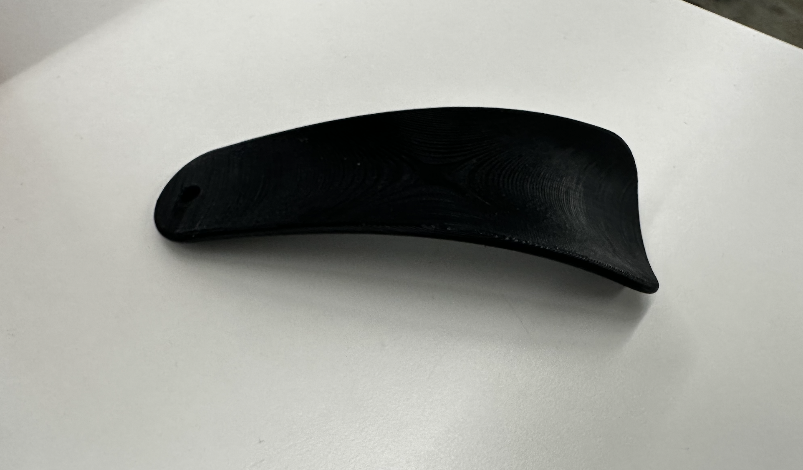
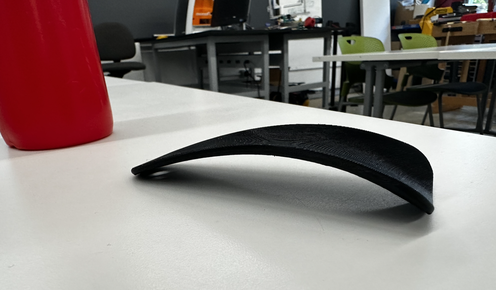
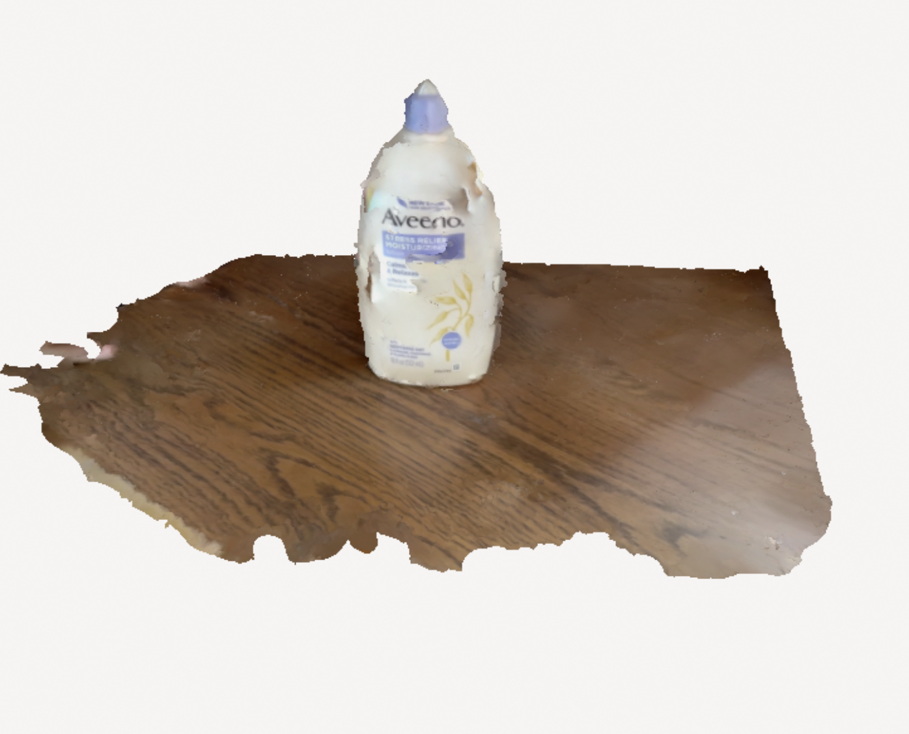

Assignment #1
For this weeks assignment we had to design and print either a component that could be use for the final project or a small object that could not be easily made by substractive method. Then, we had to scan something using any photogrammetry application.
"The Shoe Horn"
Materials Used
Prusa Slicer Software, Fusion 360, 3D Printer
Introduction
I really wanted to think broader and design something I could adapt to a challenge that perhaps I face throughout the day. Then, I thought that sometimes when I put a shoe that is too rigid, makes it hard to put it on. That is why, I created a shoe horn with the hope to fix this problem.
The process


Using Prusa Slicer
3D Printer

Final Product
 Assignment #2
Photogrammetry
I used Polycam app to scan my face as I wanted to test how well could a smartphone app scan objects. Literally, all I had to do was to tilt my phone around the body lotion (object i wanted to scan) from right to left. The app then turned the processing video into a 3D model and I wa spretty surprise. I scanned it twice. The first one had a lot of irregularities and imperfections, but the second one ( even tought there is always space for imrpovement), it eneded up better than expected. As you can see, the model shows the exact same colors and letters. Scanning was really fast, and took me less than 30 seconds. Even though I have attached a picture below, I have provided it with the link to see the model and be able to rotate to appreciate all its features in here
